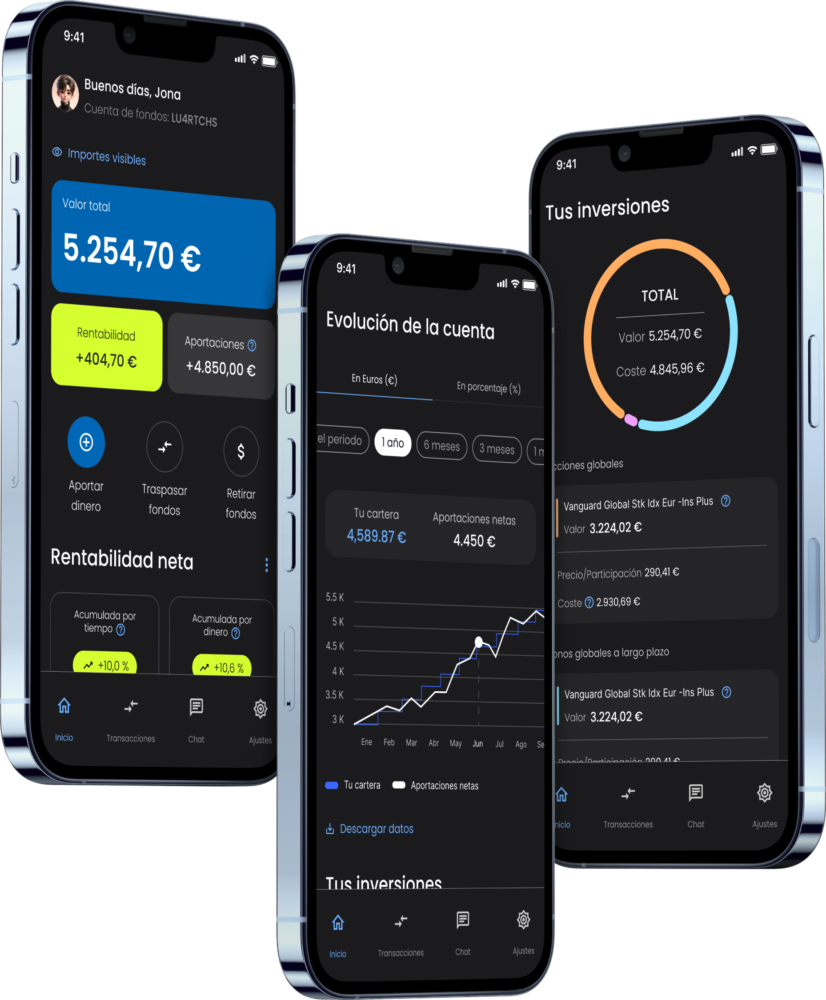

REDESIGN OF THE
GLOBAL POSITION OF THIS INVESTMENT APP TO IMPROVE THE USER EXPERIENCE
This project focuses on the redesign of the home screen of an investment application, with the aim of
solving critical
design issues, such as the lack of visual hierarchy and low accessibility, present in the current version.
REDESIGN
REDESIGN
REDESIGN
The original
application presents several design challenges that negatively affect the user experience:
Lack of visual hierarchy
Elements on the
screen are not organised in a way that guides the user through the content in a logical manner. This
makes it difficult to prioritise information and confuses the user when navigating the application.
Lack of coherent visual style
The interface lacks
an attractive and uniform visual design. The colour palette is minimal and unattractive, resulting
in a monotonous and uninspiring user experience.
Design that complicates comprehension
The current layout
of elements and the choice of colours and typography do not make it easy to read and understand
financial information, which is critical in an investment application.
PROCESS
PROCESS
PROCESS
PROCESS
Analysis
I CONDUCTED A DETAILS ANALYSIS OF THE CURRENT INTERFACE, IDENTIFYING
DESIGN ISSUES THAT AFFECT THE USER
EXPERIENCE
Reorganisation of information:
Based on the principles of visual hierarchy, the key elements of the screen were redistributed. The
main CTAs were moved
to the top to be more accessible and visible.
Selection of a new colour palette
Colours were implemented that not only improve aesthetics, but also meet contrast standards to improve
readability and
accessibility.
Content redesign
The content was restructured to make it more visual and easy to digest. Clear and differentiated
sections were created.
Dark and Ligh mood
To improve accessibility and user experience, light and dark modes have been integrated into the
screen. These modes not
only allow for aesthetic customisation, but also optimise readability and reduce visual fatigue in
different lighting
conditions.

PROJECT
PROJECT
PROJECT
PROJECT
UX PROJECT |
METRO
MACHINE
2021
Research to
improve
the
user
experience of the Madrid Metro machines